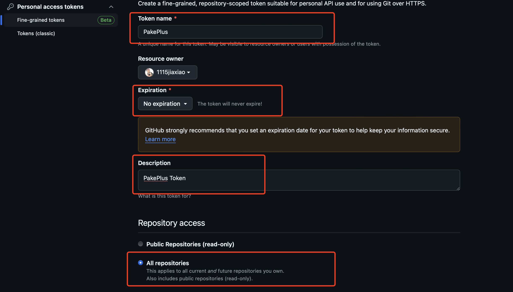
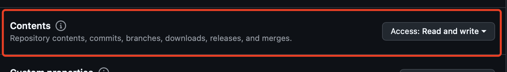
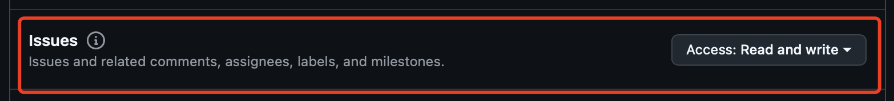
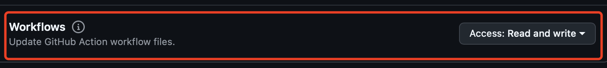
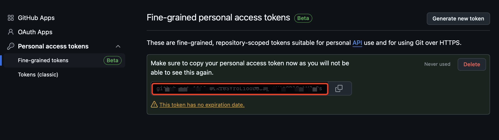
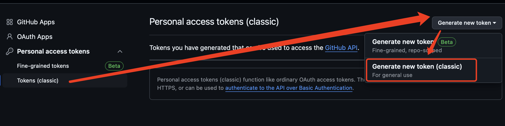
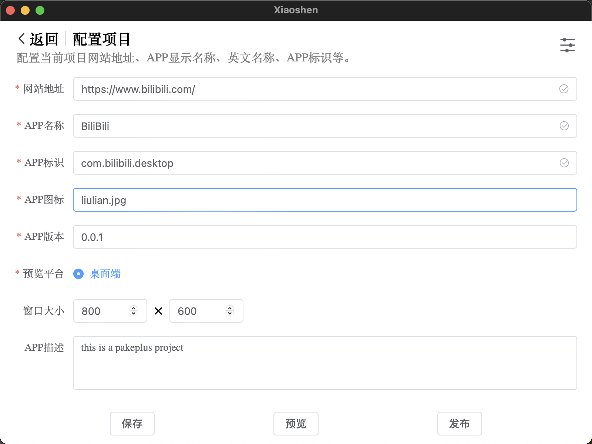
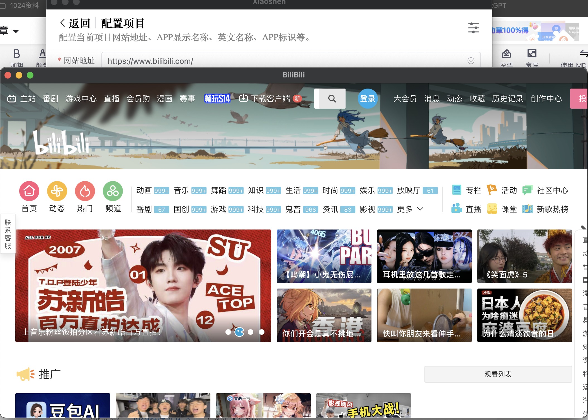
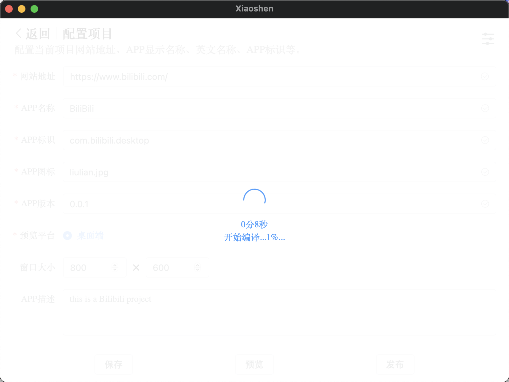
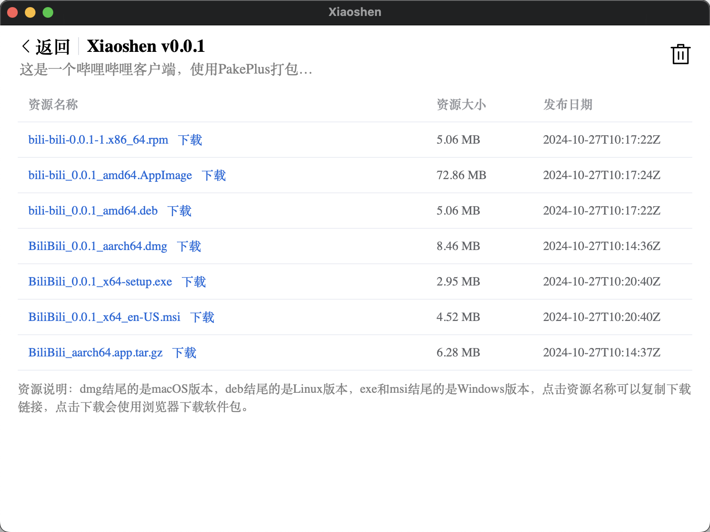

PackPlus是一个开源免费的软件，支持 Mac、Windows 和 Linux，很快也将支持 Android 和 iOS。无需在本地安装复杂的依赖环境，只需要一个Github Token就可以了。查看 README 以获取热门包和自定义开发信息。欢迎在讨论区分享你的建议。开源地址：https://github.com/Sjj1024/PackPlus
特性
- 💎 体积比 Electron 包小约 20 倍（约 5M！）
- 🚀 使用 Rust Tauri，PackPlus 比基于 JS 的框架更轻量、更快。
- 📦 内置丰富功能包——支持快捷方式、沉浸式窗口、极简自定义。
- 👻 PackPlus 只是一个简单的工具——用 Tauri 替代旧的打包方式（虽然 PWA 也够用了）。
- 🤗 PackPlus 易于使用，只需一个 GitHub Token，即可获得桌面应用。
- 🌹 不需要在本地安装任何复杂的依赖环境，使用 Github Action 云端自动打包。
- 🧑🤝🧑 支持国际化，对全球用户都非常友好，并且会自动跟随你的电脑系统语言。
获取Github Token
为什么要Github Token？因为这个编译和打包流程全部依托在github平台上进行，而且还有你要打包的web代码也都在github上管理，所以需要使用github token来操作这些事情，所以就需要这个github token有某些权限，例如不同版本的token需要不同的权限。
1.bate版本token
使用权限说明：
All repositories：要fork一个原始模板仓库
Actions：操作github action
Administration：对仓库进行fork和文件管理
Contents：对仓库内容进行添加/删除/修改/查找等操作
Issues：向PackPlus提交问题
Workflows：用来编译打包你的软件
先登录你的github账号，然后点击链接获取：https://github.com/settings/tokens?type=beta，或者到 Settings > Developer Settings 下面获取：

Generate new token：
添写一个token的名字，然后选择过期时间为不过器，描述随便写，然后选择All repositories

配置权限：赋予红框标注的权限，Access选择: Read and write




然后点击最底部的Generate token就可以了：

把得到的token复制到PackPlus就可以了：

2.classic版本token
使用权限说明：
repo：fork和管理模板代码
workflow：编译和发布你的软件
先登录你的github账号，然后点击链接获取：https://github.com/settings/tokens，或者到 Settings > Developer Settings 下面获取：

只需要勾选下面的权限就可以了：repo 和 workflow 和 user


然后将得到的token复制到PackPlus就可以了：

提示Token可用说明成功了：

将Token填写到PackPlus之后，最好测试一下是否可用，然后再开始后面的步骤。
创建项目和配置
创建项目必须使用英文名称，填写之后点击确定，等待几分钟，就可以到下一个页面，配置你要打包的网站地址和APP名称等信息，并且上传一个Icon图标，最好本地先做好一个png格式的正方形图标，直接上传就可以使用，否则会进行裁剪操作，导致你的Icon并不是很满意。

项目配置好之后，可以点击预览，会弹出一个窗口展示你程序的最终效果：如果可以正常打开，说明没有问题，也可以做一些窗口大小的配置，让页面更友好。

确定没有问题之后，就可以点击发布：

点击确定之后，需要等待Github云平台打包大概15分钟左后：

打包完成之后，会跳转到资源下载页面，可以点击下载安装，并使用了：
